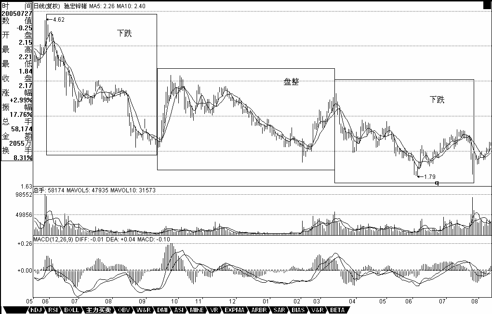
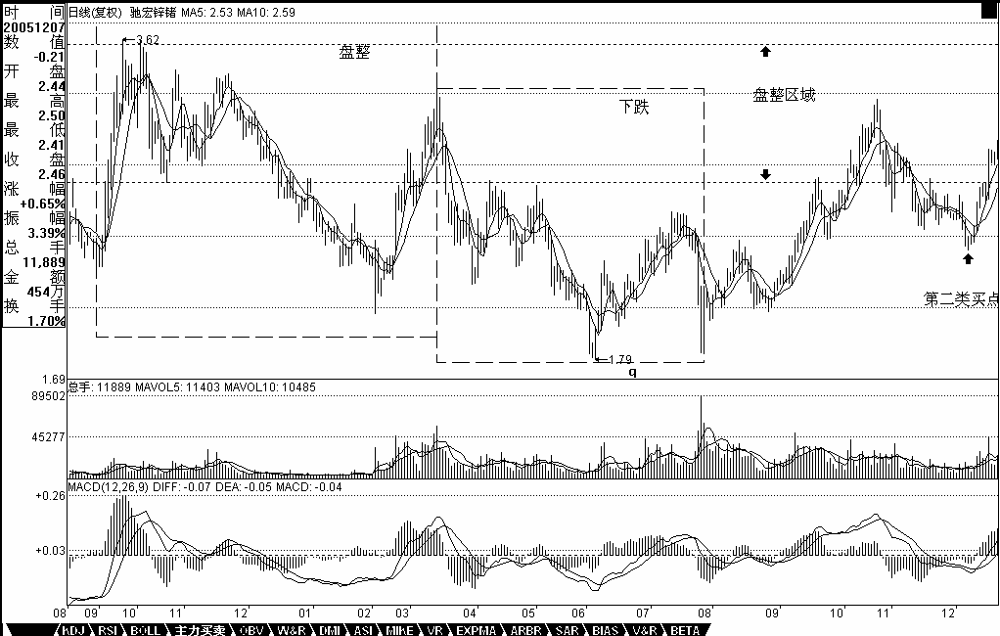
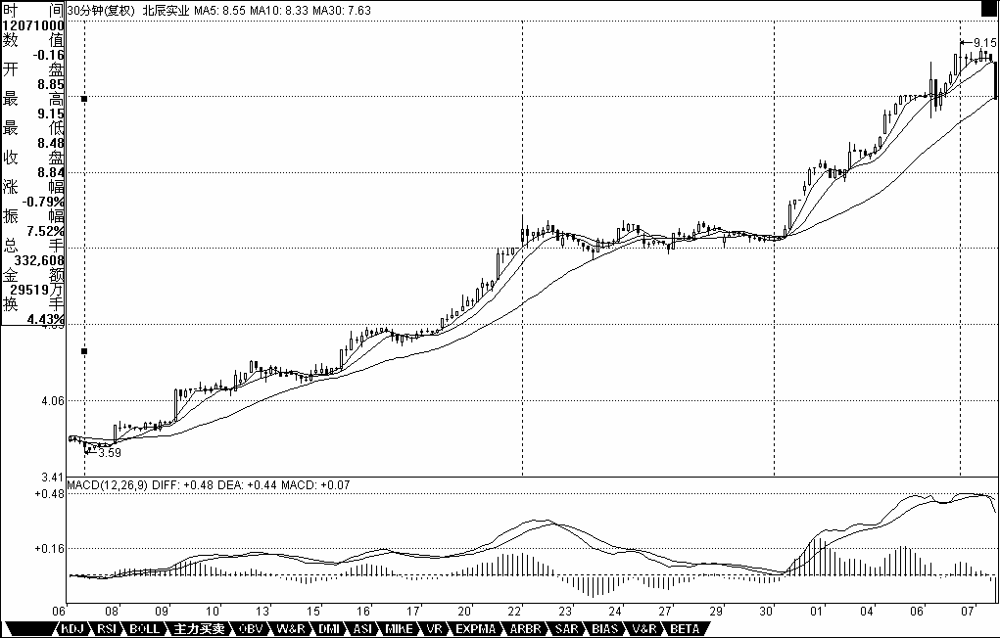

0408 - 教你炒股票16：中小资金的高效买卖法。¶
日期：(2006-12-14 12:06:47) 分类：[时政经济（缠中说禅经济学）]
上章说过，市场任何品种任何周期下的走势图，都可以分解成上涨、下跌、盘整三种基本情况的组合。上涨、下跌构成趋势，如何判断趋势与盘整，是判断走势的核心问题。一个最基本的问题就是，走势是分级别的，在30分钟上的上涨，可能在日线图上只是盘整的一段甚至是下跌中的反弹，所以抛开级别前提而谈论趋势与盘整是毫无意义的，这必须切实把握。注意，下面以及前面的讨论，如没有特别声明，都是在同级别的层面上展开的，只有把同级别的事情弄明白了，才可以把不同级别走势组合在一切研究，这是后面的事情了。
上涨、下跌、盘整三种基本走势，有六种组合可能代表着三类不同的走势：
陷阱式：上涨+下跌；下跌+上涨。 反转式：上涨+盘整+下跌；下跌+盘整+上涨。 中继式：上涨+盘整+上涨；下跌+盘整+下跌。
市场的走势，都可能通过这三类走势得以分解和研究。站在多头的角度，首先要考虑的是买入，因此，上面六种最基本走势中，有买入价值的是：下跌+上涨、下跌+盘整+上涨、上涨+盘整+上涨三种。没有买入价值的是：上涨+下跌；上涨+盘整+下跌；下跌+盘整+下跌。由此不难发现，如果在一个下跌走势中买入，其后只会遇到一种没买入价值的走势，就是下跌+盘整+下跌，这比在上涨时买入要少一种情况。而在下跌时买入，唯一需要躲避的风险有两个：一、该段跌势未尽；二、该段跌势虽尽，但盘整后出现下一轮跌势。
在上一章没有趋势没有背驰中，对下跌走势用背驰来找第一类买点，就是要避开上面的第一个风险。而当买入后，将面对的是第二个风险，如何避开？就是其后一旦出现盘整走势，必须先减仓退出。为什么不全部退出，因为盘整后出现的结果有两种：上涨、下跌，一旦出现下跌就意味着亏损，而且盘整也会耗费时间，对于中小资金来说，完全没必要。这里有一个很重要的问题留待后面分析，就是如何判断盘整后是上涨还是下跌，如果把握了这个技巧，就可以根据该判断来决定是减仓退出还是利用盘整动态建仓了。这是一个大问题，特别对于不想坐庄的大资金来说，这是一个最重要的问题，因为不想坐庄的大资金的安全建仓在六种走势中只可能在下跌+盘整+上涨这一种，其他都不适用。至于坐庄的建仓方法，和这些都不同，如有兴趣，本ID以后也可以说的。
根据上面的分析，可以马上设计一种行之有效的买卖入方法：在第一类买点买入后，一旦出现盘整走势，无论后面如何，都马上退出。这种买卖方法的实质，就是在六种最基本的走势中，只参与唯一的一种：下跌+上涨。对于资金量不大的，这是最有效的一种买卖方法。下面重点分析：
对于下跌+上涨来说，连接下跌前面的可能走势只会有两种：上涨和盘整。如果是上涨+下跌+上涨，那意味着这种走势在上一级别的图形中是一个盘整，因此这种走势可以归纳在盘整的操作中，这在以后对盘整的专门分析里研究。换言之，对于只操作“下跌+上涨”买卖的，“上涨+下跌+上涨”走势不考虑，也就是说，当你希望用“下跌+上涨”买卖方法介入一只出现第一类买点的股票，如果其前面的走势是“上涨+下跌”，则不考虑。注意，不考虑不意味着这种情况没有赢利可能，而只是这种情况可以归到盘整类型的操作中，但“下跌+上涨”买卖方法是拒绝参与盘整的。如此一来，按该种方法，可选择的股票又少了，只剩下这样一种情况，就是“盘整+下跌+上涨”。
从上面的分析可以很清楚地看到，对于“下跌+上涨”买卖方法方法来说，必须是这样一种情况：就是一个前面是“盘整+下跌”型的走势后出现第一类买点。显然，这个下跌是跌破前面盘整的，否则就不会构成“盘整+下跌”型，只会仍是盘整。那么在该盘整前的走势，也只有两种：上涨、下跌。对于“上涨+盘整+下跌”的，也实质上构成高一级别的盘整，因此对于“下跌+上涨”买卖方法方法来说也不能参与这种情况，因此也就是只剩下这样一种情况：“下跌+盘整+下跌”。
综上所述，对于“下跌+上涨”买卖方法方法来说，对股票的选择就只有一种情况，就是：出现第一类买点且之前走势是“下跌+盘整+下跌”类型。因此这里就得到了用“下跌+上涨”买卖方法方法选择买入品种的标准程序：一、首先只选择出现“下跌+盘整+下跌”走势的。二、在该走势的第二段下跌出现第一类买点时介入。三、介入后，一旦出现盘整走势，坚决退出。注意，这个退出肯定不会亏钱的，因为可以利用低一级别的第一类卖点退出，是肯定要赢利的。但为什么要退出，因为它不符合“下跌+上涨”买卖不参与盘整的标准，盘整的坏处是浪费时间，而且盘整后存在一半的可能是下跌，对于中小资金来说，根本没必要参与。一定要记住，操作一定要按标准来，这样才是最有效率的。如果买入后不出现盘整，那就要彻底恭喜你了，因为这股票将至少回升到“下跌+盘整+下跌”的盘整区域，如果在日线或周线上出现这种走势，进而发展成为大黑马的可能是相当大的。
举一个例子：

【编者注：此图可能是当时的网友补充的】
驰宏锌锗：
日线上，2004年6月2日到2004年9月10日，构成下跌走势；
2004年9月10日到2005年3月14日，构成盘整走势；
2005年3月14日到2005年7月27日，构成下跌走势。
也就是说，从2004年6月2日到2005年7月27日，构成标准的“下跌+盘整+下跌”的走势，而在相应的2005年3月14日到2005年7月27日的第二次下跌走势中，7月27日出现明显的第一类买点，这就完美地构成了“下跌+上涨”买卖方法的标准买入信号。其后走势，很快就回到2004年9月10日到2005年3月14日的盘整区间，然后回调在2005年12月8日出现标准的第二类买点，其后走势就不用多说了。

【编者注：此图可能是当时的网友补充的】
该种方法反过来就是选择卖点的好方法了，也就是说前面出现“上涨+盘整+上涨”走势的，一旦第二段升势出现第一类卖点，一定要走，因为后面很可能就是“上涨+下跌”的典型走势。对此，也举一个例子：北辰实业，在30分钟图上，11月7日10点30分到11月22日10点，构成上涨；11月22日10点到11月30日11点构成盘整；11月30日11点到12月7日10点构成上涨。而在第二段上涨中，30分钟图上的3次红柱子放大，一次比一次矮所显示的严重背离，就完美地构成了“上涨+盘整+上涨”后出现第一类卖点的“上涨+下跌”型卖出。如果以后学了时间之窗的概念，对该股的卖点就更有把握了，各位注意到11月7日10点30分和12月7日10点之间的关系没有。

【编者注：此图可能是当时的网友补充的】
这种方法，无论买卖，都极为适用于中小资金，如果把握得好，是十分高效的，不过要多多看图，认真体会，变成自己的直觉才行。另外请多看文章后面的跟贴，ID的一些回复都是针对一些主帖没所到的细节东西，而且都是针对各位提出的不同问题的。还有多看前面的章节，把所有问题都搞懂，参与市场是不能有半点糊涂的。
本文评论获取自靠谱的方式，包含疑似禅师的回复数量：[43]
UID:[1215172700] 昵称：缠中说禅 日期：(2006-12-14 12:14:34)
这个方法十分有效，好好研究吧。另外请多看文章后面的跟贴，ID的一些回复都是针对一些主帖没所到的细节东西，而且都是针对各位提出的不同问题的。
UID:[0] 昵称：[匿名] MM 日期：(2006-12-14 12:15:02)
沙发
UID:[1215172700] 昵称：缠中说禅 日期：(2006-12-14 12:28:10)
[匿名] 快 2006-12-14 12:24:34
LZ,当前点位,更适合分散持仓还是集中持仓,资金50万左右
===========
最多不要超过3只。你这种资金，学好这种方法，用30分钟图或日线图，1年下来达不到300%的赢利，那算太差劲了。
UID:[1215172700] 昵称：缠中说禅 日期：(2006-12-14 12:34:06)
昨天的作业，主要是要各位搞清楚用MACD看背驰是该怎么看。并不是见柱子就要比较长短，一定要结合趋势来。记住，没有趋势没有背驰，好好理解这句话。背驰是两个趋势之间比较才有意义，和盘整里比较是没用的。
昨天各位的答案都不正确，看完今天的文章，请继续用580991进行分析，结合今天的方法。
提示一下，该日线图上只有一个背驰点，也就是说只有一个第一类买点。
本ID把答案说出来很简单，但更有效的是各位自己通过研究尽量发现，这样才深刻理解。明天公布最终答案。
注意这一点背驰是两个趋势之间比较才有意义，和盘整里比较是没用的。
UID:[1215172700] 昵称：缠中说禅 日期：(2006-12-14 12:38:11)
[匿名] ataoo0 2006-12-14 12:31:06
缠中说禅 2006-11-29 15:14:38
从大盘健康的角度说，本ID给大盘的建议是：先深成指突破6103点的历史高位，然后上海跟上，突破以后再调整，这样更健康。不知道大盘有没有兴趣听本ID的意见了。
楼主，觉得大盘听从你的意见了吗？》
============
其实上海、深圳谁先突破都不重要，大盘现在只是牛市的第一阶段，关键心态要好。别大盘晃两下就怕。本ID再把一句说过的话再说一次：牛市里，跌就是爹。还要严重再次反复说：第一阶段主力是成分股，看看1000点上来，是不是这样！
UID:[1215172700] 昵称：缠中说禅 日期：(2006-12-14 12:39:41)
[匿名] 阿Q 2006-12-14 12:35:12
缠姐姐，能不能在给我们讲一下资金的合理配置？比如说建仓的时候用掉多少，第一个卖点卖多少，加仓时加多少，最后卖掉的话是不是一定要全部卖光？这个方面我挺难把握的。 谢谢！
==========
这些问题都自然要说到，关键是把基本的方法搞清楚，现在看，基本连背驰搞清楚的都没有。没有趋势，没有背驰。背驰是两个趋势之间比较才有意义，和盘整里比较是没用的。好好理解。
UID:[1215172700] 昵称：缠中说禅 日期：(2006-12-14 12:45:06)
[匿名] nn 2006-12-14 12:36:19
谢谢楼主.楼主辛苦了,请教一个问题,中小资金与大资金在分批(或分配)上要不要(有没有必要)区分一下,即仓位的管理问题,还有就是上班一族能不能象你说的那样高效利用资金?相比楼主的方法,俺只能算守株待兔了,完全谈不上效率,谢谢指教!
==========
上班的看日线就可以。
UID:[1215172700] 昵称：缠中说禅 日期：(2006-12-14 12:46:38)
[匿名] 缠绵不觉 2006-12-14 12:44:49
授人以渔，其德大焉趋势怎样看出来呢？靠K线？
=========
你要反复将前面的研究透，这个问题在15已经说得很清楚了。不能前面的课落了一大截，那现在怎么跟得上。
UID:[1215172700] 昵称：缠中说禅 日期：(2006-12-14 12:55:55)
[匿名] 无言 2006-12-14 12:54:08
缠姐,你好,日线图上第一类买点出现时,K线组合都十分难看,如何能判别该股中线行情力度的大小?是看周线图上各条均线的位置吗?能否详细讲解?谢谢
=============
这个问题以后会说到，先把这个方法研究清楚。谁掌握了这个方法，95%的人都不是你对手了。
UID:[1215172700] 昵称：缠中说禅 日期：(2006-12-14 13:00:04)
[匿名] 心易 2006-12-14 12:55:56
580991在日线图上的第一类买点分析如下：10月23日，0.50元附近。对否请博主指正。谢谢！
=================
现在问你是如何看出背驰的，这才是关键，有背驰才有第一类买点，把逻辑关键搞清楚。开盘，先下，再见
UID:[1215172700] 昵称：缠中说禅 日期：(2006-12-14 13:01:27)
[匿名] 朗月无花 2006-12-14 12:56:07
楼主最近成了股票专题了，你写论语回帖也是股票，对于我们这些股盲们实在是难受啊，能不能也照顾照顾我们啊
===========
关键你们不提有关论语等的问题，你看前面，有提人民币的问题，本ID也回答了。你在这里也可以提其他问题的。下，再见。
UID:[0] 昵称：[匿名] Q 日期：(2006-12-14 13:18:38)
QIANG REN
UID:[0] 昵称：[匿名] 悠悠悠哉 日期：(2006-12-14 13:25:36)
大姐 我有个问题 那盘整多久才算是盘整啊我前段时间是刚扔了 就涨 （在盘整中的） 艾倒霉哇还有 我本来想拿一会的 可是大盘1800点时我想出来看看风水 想不到就是这个时候发动了 轻易50％ 不是我不去追 这时又换了其它的了 大盘涨 她涨点 等我走了 又涨 关键是自己知道的太少 没信心啊！呵呵 所以 大姐不如露点消息啊 让我赚个几百 糊口饭吃
UID:[0] 昵称：[匿名] 悠悠悠哉 日期：(2006-12-14 14:06:25)
我最近拿的这个男人 怎么像老大说的那样在精尽人亡啊 倒霉艾
UID:[1215172700] 昵称：缠中说禅 日期：(2006-12-14 15:10:16)
创历史新高这种无聊事情就别想那么多了，随着行情的展开，不断往上就不断创历史新高。心态平稳点，牛市的第一轮行情就受不了，那到第三轮垃圾股漫天飞时，那不找不到站的地方？
UID:[0] 昵称：[匿名] 悠悠悠哉 日期：(2006-12-14 15:14:57)
大姐 我有个问题 那盘整多久才算是盘整啊我前段时间是刚扔了 就涨 （在盘整中的） 艾倒霉哇还有 我本来想拿一会的 可是大盘1800点时我想出来看看风水 想不到就是这个时候发动了 轻易50％ 不是我不去追 这时又换了其它的了 大盘涨 她涨点 等我走了 又涨 关键是自己知道的太少 没信心啊！呵呵 所以 大姐不如露点消息啊 让我赚个几百 糊口饭吃 暗喻也行啊
UID:[1215172700] 昵称：缠中说禅 日期：(2006-12-14 15:18:14)
[匿名] 悠悠悠哉 2006-12-14 15:14:57
大姐 我有个问题 那盘整多久才算是盘整啊
============
这证明你根本没理解什么是盘整，只要走出盘整的形态就是盘整，和时间根本没关系。国外有些股票，一盘盘10年8年的一点都不奇怪。关键是形态。
UID:[1215172700] 昵称：缠中说禅 日期：(2006-12-14 15:25:45)
[匿名] 想飞 2006-12-14 14:51:21
LZ，驰宏锌锗日线上，2004/6/2~2004/9/10，如果没有后面的走势，应该也可以看作“下跌-盘整-下跌”走势，2004/8/23出现第一买点，对吗？
=============
对也不对。不对在于，在日线上并不是“下跌-盘整-下跌”，但在30分钟线上是，所以说对也不对。该段走势在日线上只构成一个下跌，这里面的微妙之处，好好体会。
UID:[1215172700] 昵称：缠中说禅 日期：(2006-12-14 15:31:32)
[匿名] 想飞 2006-12-14 14:43:48
“盘整：最近一个高点比前一高点高，且最近一个低点比前一低点低；或者最近一个高点比前一高点低，且最近一个低点比前一低点高。”LZ，这句话看似简单，但要落实到实践中还是有一定的难度的，最好以驰宏锌锗为例，选两个点说明一下，这样比较直观，好理解请一定不要嫌麻烦，不理解这个，我的作业又会交不出的的
=============
下跌盘整，用肉眼就可以看出来，除非连高点和低点都分不清楚。注意，这里并不需要预测，只要看前面已经走出来的图形。好好研究一下本ID这两段话：
驰宏锌锗：日线上，2004年6月2日到2004年9月10日，构成下跌走势； 2004年9月10日到2005年3月14日，构成盘整走势；2005年3月14日到2005年7月27日，构成下跌走势。也就是说，从2004年6月2日到2005年7月27日，构成标准的“下跌+盘整+下跌”的走势，而在相应的2005年3月14日到2005年7月27日的第二次下跌走势中，7月27日出现明显的第一类买点，这就完美地构成了“下跌+上涨”买卖方法的标准买入信号。其后走势，很快就回到2004年9月10日到2005年3月14日的盘整区间，然后回调在2005年12月8日出现标准的第二类买点，其后走势就不用多说了。
缠中说禅 2006-12-14 15:25:45
[匿名] 想飞 2006-12-14 14:51:21
LZ，驰宏锌锗日线上，2004/6/2~2004/9/10，如果没有后面的走势，应该也可以看作“下跌-盘整-下跌”走势，2004/8/23出现第一买点，对吗？
=============
对也不对。不对在于，在日线上并不是“下跌-盘整-下跌”，但在30分钟线上是，所以说对也不对。该段走势在日线上只构成一个下跌，这里面的微妙之处，好好体会。
UID:[1215172700] 昵称：缠中说禅 日期：(2006-12-14 15:40:47)
悠悠悠哉 2006-12-14 15:27:37
比如说 区间破了 特别是庄稼时代 大都会回来确认的 碰到慢性子他再盘会 我一追就套 看盘了又走 那岂不是被玩死 还要考虑是不是真破还是诱多？
悠悠悠哉 2006-12-14 15:29:51
还有不到收盘是看不出今天正真意图的 他一个吸盘 指标全破了 收盘或明后天又拉回来 那该如何是好 岂不是又被玩死
============
这些问题还提就根本没搞清楚级别的问题，如果你按日线来操作，哪里存在关系收盘不收盘的问题？如果你按30分钟线操作，就看30分钟图就完了，和收盘有什么关系？先把这个问题搞清楚，否则思维永远扭不过来。
UID:[1215172700] 昵称：缠中说禅 日期：(2006-12-14 15:43:19)
[匿名] ruifeng0021 2006-12-14 15:35:35
580991作业从日线图上看,9.22开始下跌趋势,5和10日均线程男上位缠绕,以10.17为分界点,后面的面积较前面小不少,可判断为背弛,MACD上绿柱变短,黄白线在0线以下,均支持背弛的判断,最好的买点在下跌中的低点10.23,是缠理论中第一类买点从30分种图上,看得更清楚,从9.22的11:00到10.23的11:00是很明显的"下跌+盘整+下跌"走势,10.23的11:00处是最好的买点.以上分析是否对路
============
完全错误，请好好体会这一句：没有趋势，没有背驰，背驰是趋势与趋势之间的比较，你不先找出两段趋势来，哪里有背驰可言？
UID:[1215172700] 昵称：缠中说禅 日期：(2006-12-14 15:50:32)
[匿名] 摄影之友 2006-12-14 15:33:14
博主：现在的大盘已经取得了阶段性的进展。请再次为我们明示下一步的操作吧。这几天没有你的明示，实在郁闷至及，成绩欠佳。就当“扶上马，送一程”吧。。。今天轻仓。但愿我的思路是对的。
=========
又是一个错误思维。请问现在是牛市还是熊市？如果是牛市，机会满大街都是，为什么要轻仓？从1000点上来，你的仓位整天变来变去，能否比一路持有成分股不动来得高？如果没有，那你的操作都是有很大问题的。如果你是市场中的人，资金回来就要马上选择还的进入对象，例如在30分钟或日线图上找符合要求的股票，或者找轮炒的股票，这样资金利用率才会高。或者干脆就长抓一些股票，根据市场的波动不断弄短差，把成本降低，这样资金利用率也高。牛市里不挣钱就与熊市心态有关。
UID:[1215172700] 昵称：缠中说禅 日期：(2006-12-14 15:58:37)
缠中说禅 2006-12-14 15:43:19
[匿名] ruifeng0021 2006-12-14 15:35:35
580991作业从日线图上看,9.22开始下跌趋势,5和10日均线程男上位缠绕,以10.17为分界点,后面的面积较前面小不少,可判断为背弛,MACD上绿柱变短,黄白线在0线以下,均支持背弛的判断,最好的买点在下跌中的低点10.23,是缠理论中第一类买点从30分种图上,看得更清楚,从9.22的11:00到10.23的11:00是很明显的"下跌+盘整+下跌"走势,10.23的11:00处是最好的买点.以上分析是否对路
============
完全错误，请好好体会这一句：没有趋势，没有背驰，背驰是趋势与趋势之间的比较，你不先找出两段趋势来，哪里有背驰可言？
========
补充一句，你所的那段走势力，在5分钟图上是对的，是"下跌+盘整+下跌"，但在30分钟上就只是一个下跌。请好好想明白这个区别。
UID:[1215172700] 昵称：缠中说禅 日期：(2006-12-14 16:02:18)
[匿名] 翅膀的痕迹 2006-12-14 15:55:13
缠MM：10月27日前期下跌盘整下跌走势，27日创历史新低但是绿柱子缩短，判断为背弛。
=========
不对，分析不能这样粗略的，那是很严格的。如果你真掌握了这种方法，你就知道其严格性。再告诉各位一个缠中说禅定律：任何非盘整性的转折性上涨，都是在某一级别的"下跌+盘整+下跌"后形成的。下跌反之。好好理解。
UID:[1215172700] 昵称：缠中说禅 日期：(2006-12-14 16:03:48)
[匿名] 夜雨 2006-12-14 16:00:46
美女姐姐,谢谢你对038004的解说,我又得到您的提醒了,下午换仓操作,有收获再告诉大家,不知我猜的对不对,哈哈以上这段话是昨天看了美女姐姐关于038004的回答给我的提醒,所以我昨天下午进了030002,楼主已经提醒过好几支牛股了,600839和000927,我是在来这就买的,看了楼主的文章,坚定了我持股的信心,大家也要好好找啊,寻找宝藏的游戏 再一次感觉美女姐姐
===========
这里是说技术的，不是来寻宝的。先把技术学好吧。
UID:[1215172700] 昵称：缠中说禅 日期：(2006-12-14 16:12:56)
[匿名] 中间体 2006-12-14 16:06:08
2006.6.2-7.12 下跌.2006.7.12-10.19 盘整10.19以后为第二次下跌, 背离出现.对吗??
===========
首先要搞清楚是在什么图上讨论问题。日线上如果要构成下跌，要很明显地看出至少两个高点，两个低点。你认为的下跌，这个要求不成立，你认为的盘整也是。
UID:[1215172700] 昵称：缠中说禅 日期：(2006-12-14 16:31:27)
[匿名] 在路上 2006-12-14 16:14:28
本来我以为自己清楚什么是盘整,但看了驰宏锌锗的例子又糊涂了,请缠姐指点.日线上，2004年6月2日到2004年9月10日，构成下跌走势；这个明显. 胆2004年9月10日到2005年3月14日，构成盘整走势；这个就不太明白了,这次相比上一次不也是创了新低,也没有比上一个高点高啊,怎么会是盘整呢?请缠姐明示!!!
=============
盘整，会构成各种不同的图形，这是一种特殊的盘整图形，叫顺势平台，这是盘整里最弱的一种。由于现在没说到价值中枢的概念，所以有关趋势与盘整的最严格定义没法给出，该定义是本ID独此一家，以后会说到的。所以现在各位先用这个通用的，但不完全严格的定义来找趋势与盘整，该定义唯一不精确的地方就是这个顺势平台，把这个特例记住就可以了。
UID:[0] 昵称：[匿名] 悠悠悠哉 日期：(2006-12-14 16:42:01)
拿600874 我刚看到的 大姐你到分析下 着算是突破 还是还在盘那？
UID:[1215172700] 昵称：缠中说禅 日期：(2006-12-14 16:49:31)
[匿名] ruifeng0021 2006-12-14 16:36:28
===========
完全错误，请好好体会这一句：没有趋势，没有背驰，背驰是趋势与趋势之间的比较，你不先找出两段趋势来，哪里有背驰可言？
========
补充一句，你所的那段走势力，在5分钟图上是对的，是"下跌+盘整+下跌"，但在30分钟上就只是一个下跌。请好好想明白这个区别。
还没想明白,请问,580991的30分种图上,9月28日14:30到10月20日的11:30这段不算盘整吗?我看从9月22日到10月23日的30分钟和5分钟图是一样的形态呀,请指教其区别,另外,日线图上是5.31-7.11和9.21-10.23两段趋势比较,对吗
=============
知道为什么吗？因为他的下跌在30分钟图上根本没有出现高、低点，也就是说根本就是一条直线下来的，连5-30分钟线都突破不了，这种只能算是低一级别里的下跌。注意，在一个级别的趋势里，必须出现明显的高、低点，这在30分钟里是没有的，而5分钟或者1分钟里是明显的。所以说在5分钟里是"下跌+盘整+下跌"，而30分钟里合起来只算一个下跌。
UID:[1215172700] 昵称：缠中说禅 日期：(2006-12-14 16:51:17)
[匿名] 雨中荷 2006-12-14 16:39:30
楼主你好！580991的背驰是不是因为6月2日到7月14日由五日线和十日线交叉形成的体积远远大于9月2日到10月17五日线和十日线交叉形成的体积，所以就可以判断背驰产生,然后10月23日股价创新低而MACD的绿柱缩小也就是表示第一买点形成。请楼主点评谢谢！！！
==========
先别判别什么背驰，背驰是趋势与趋势的力度表现出来的，先把趋势找好，趋势的级别找好，才有指出背驰的前提。这个思路一定要清楚！好好理解。
UID:[1215172700] 昵称：缠中说禅 日期：(2006-12-14 16:58:56)
[匿名] 阿Q 2006-12-14 16:37:52
再告诉各位一个缠中说禅定律：任何非盘整性的转折性上涨，都是在某一级别的"下跌+盘整+下跌"后形成的。下跌反之。
我看了一下图，是这样理解的，30分钟图上的非盘整性上涨是由5分钟图上的下跌-盘整-下跌后形成的。对否？
==========
不对，不一定是低一级别的，同级别的也可以。高一级别的也可以。所以是某一级别。
UID:[1215172700] 昵称：缠中说禅 日期：(2006-12-14 17:03:01)
[匿名] 获益匪浅 2006-12-14 16:54:56
再看图，似乎有新的发现，望楼主指教。从日线上看应该是6月1日开始下跌趋势，至7月12日出现第一个低点，之后开始转折形成第一吻，并且是湿吻，9月21日开始形成第二次下跌，并与10月23日出现第二个低点，且比第一点还低，通过比较MACD绿柱及均线形成的面积比较，趋势力度明显减弱，形成背驰。
==========
这个思路是模糊的，习惯于这样的思维将很难面对实时复杂的情况。应该是：首先判别是在哪个级别出现趋势，而且是前后两个趋势，然后才有谈论背驰的可能。再次强调：没有趋势、没有背驰，先把趋势搞明白。背驰是两个前后趋势之间的比较。思维要转过来，这里的思维和其他地方完全不同的。别以为看到绿柱子就知道背驰，那只是辅助手段，首先要搞清楚趋势。
UID:[1215172700] 昵称：缠中说禅 日期：(2006-12-14 17:09:59)
总书记 2006-12-14 16:59:16
请问博主，看图是根据自己的情况选择一种级别的图后始终看这一级别的图，还是各级别的图来回看？如先看日线，然后看30分钟，再看5分钟？谢谢
============
你按照某级别的图进出，但你首先要搞清楚，你这级别的走势究竟是怎样产生的，而且，趋势的改变往往是从其他级别的改变开始的，所以当然要看不同级别的图。但进出，就要根本资金等决定进出的级别。这个问题很简单，例如，你有10亿资金，一个30分钟的买点，肯定对你没意义，所以你根本无须看30分钟的图来进出。例如，你是看日线的进出的，但你必须时刻关注30分钟图，为什么，因为日线的改变，首先从30分钟开始，你必须知道30分钟究竟在发生什么事情。当然，5分钟太短，就没必要看了。
UID:[1215172700] 昵称：缠中说禅 日期：(2006-12-14 17:12:32)
公告看来各位在级别、趋势、背驰、盘整等方面都还很混乱，下周一，本ID将上传一个更系统详细关注这几个概念的文章。这几天，有空先自己想清楚，自己想明白是最好的。所以本ID一定要给作业，这样才知道是否真明白了。
UID:[1215172700] 昵称：缠中说禅 日期：(2006-12-14 17:15:50)
[匿名] 面首甲 2006-12-14 17:10:16
请问姐姐，在大牛市里如何寻找第一买点的股票？是到那些跌幅榜上去找吗？毕竟大多数股是处在买点和卖点之间啊。
============
你这样的问题，就仿佛你从来没看过前面的课程。先把前面的课程认真消化了，就不会问这样的问题了。可以提示一句，买点和卖点是有级别的，日线上的第一类买点，可能两年才出现一次，而5分钟上的，可能两天就出现一次，关键看你想干什么了。
UID:[1215172700] 昵称：缠中说禅 日期：(2006-12-14 17:22:04)
我是阿q 2006-12-14 17:17:50
缠中说禅 2006-12-14 16:37:52
再告诉各位一个缠中说禅定律：任何非盘整性的转折性上涨，都是在某一级别的"下跌+盘整+下跌"后形成的。下跌反之。
我看了一下图，是这样理解的，30分钟图上的非盘整性上涨是由5分钟图上的下跌-盘整-下跌后形成的。对否？
==========
不对，不一定是低一级别的，同级别的也可以。高一级别的也可以。所以是某一级别。
==========
所以这只是非转折性上涨（下跌）的一个必要而非充分条件？
==========
不对，你这样的思维，又把级别给忘掉了。某一级别的"下跌+盘整+下跌"后，也必然导致某级别的非盘整性的转折性上涨。但关键是级别，例如这个上涨只是在1分钟图上出现，那就不一定有意义了，这才是关键所在，和什么充分必要无关。各位，一定要注意级别，从一开始就反复强调，离开级别谈趋势是没意义的，30分钟的趋势，在日线上可能就是盘整，一定要搞清楚。
UID:[1215172700] 昵称：缠中说禅 日期：(2006-12-14 17:33:18)
本ID要下了，把几句最重要的话列举如下，一定要每一句都搞清楚，才可能真明白的：
1、离开级别，无所谓趋势。
2、没有趋势，没有背驰；背驰是前后趋势间的比较，也就是说，在同一级别图上存在两段同方向的趋势是出现背驰的前提。
3、趋势、盘整等，都必须要图上有明显的高低点。没有明显高低点的，只能构成趋势或盘整中的一段。
先把这几个最简单的问题搞清楚，然后才可能深入下去。因为这都是最基础的东西。例如，第一类买点是背驰后出现的，如果你连背驰是什么都搞不清楚，在一个盘整中也找什么第一类买点，那肯定要出问题的。提一个问题，各位思考一下，如果能回答正确，那上面关于级别、趋势、盘整等就能明白个大概了。某一级别中盘整低点是如何形成的该问题的答案也构成一条缠中说禅定律。
UID:[1215172700] 昵称：缠中说禅 日期：(2006-12-14 17:36:37)
各位，都别急着回答580991的问题了，先把上面几个基本的问题搞清楚。先下，再见。
UID:[1215172700] 昵称：缠中说禅 日期：(2006-12-14 17:46:49)
我是阿q 2006-12-14 17:40:57
作业：某一级别中盘整低点是如何形成的该问题的答案也构成一条缠中说禅定律。
=============
答：某一级别中盘整低点是由低一级别的买点形成的；同理，某一级别中盘整高点是由低一级别的卖点形成的。
==========
临下提示一下，这个回答是典型的似是而非。各位要回答正确，一定要把各种概念严格细致地想清楚，因为有些关系特别微妙。下了，再见。
UID:[0] 昵称：[匿名] CCTV 日期：(2006-12-14 18:08:14)
佩服，学习。
UID:[0] 昵称：[匿名] 悠悠悠哉 日期：(2006-12-14 19:56:36)
我来回答以日线不为基准的 没有趋势的行情中的高低点对吧 大姐 呵呵
UID:[0] 昵称：[匿名] 牛牛 日期：(2006-12-14 22:44:39)
现在的第一类买点都在日线级别以下的各次级级别中了
UID:[1215172700] 昵称：缠中说禅 日期：(2006-12-15 12:24:13)
看了各位的答案，都不大对。相关问题，请到新帖子继续讨论。